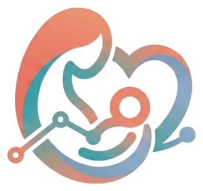

MUMALINK.DR
RN
Continuous maternal intelligence, digital triage, and hospital care teams.
[ WE ARE MUMALINK ]
Making maternal
care universal.
From hospital discharge to the 42nd day postpartum, we bring continuous WhatsApp triage, clinical algorithms, and hospital care teams together to ensure no mother suffers alone.
[ MADE FOR POSTPARTUM ]
10-Metric EPDS Clinical Standard
10Q
Automated Triage
42d
Continuous post-discharge surveillance across partner maternity hospitals.